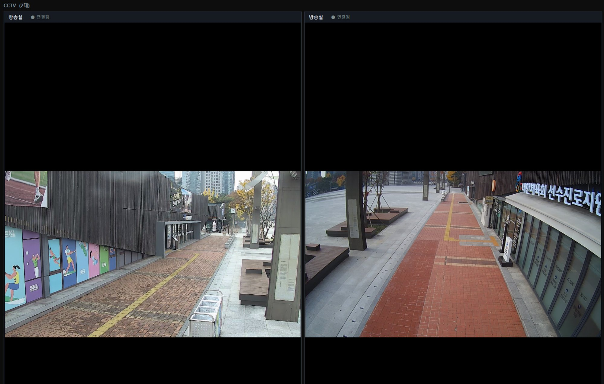

안전
옥외 소방시설 화재 경보 시스템 구축
전력감시반 SCADA에서 함께 감시하던 옥외 소방시설을 별도의 소방 감시 시스템으로 옮겼습니다. 담당자는 전용 화면에서 시설별 상태와 화재 경보 이력을 확인할 수 있습니다.

- 3D 도면으로 경보 위치 확인

- 화재 경보가 발생한 위치를 3D 도면에 표시해 담당자가 해당 구역을 빠르게 파악할 수 있도록 했습니다.
- 주변 CCTV로 초기 상황 확인

- 경보 위치와 주변 CCTV 영상을 한 화면에서 보여줍니다. 담당자는 영상과 경보 정보를 함께 살펴 실제 화재인지 오작동 가능성이 있는지 판단하는 데 참고할 수 있습니다.
- AI를 활용한 운전 기록 정리
- 당일의 설비 동작 상태와 오류·고장 이력을 AI로 정리해, 담당자가 반복되는 이상을 살피고 후속 점검과 유지보수에 활용할 수 있도록 합니다.